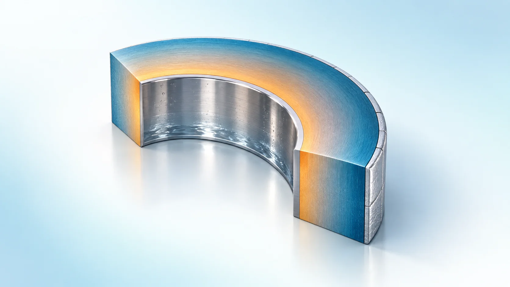
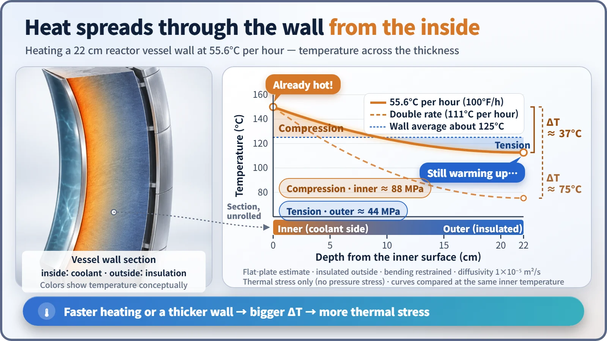
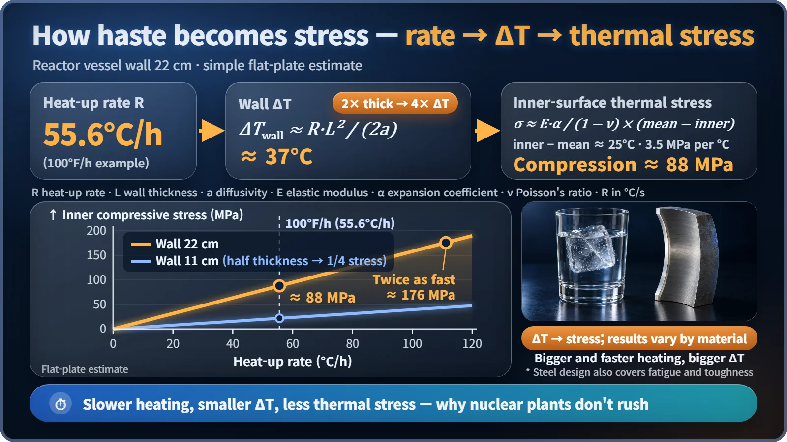

Plant Operation, Control & the Grid · 242
Why Ice Cracks in Your Drink — Thermal Stress and Why Reactors Must Heat Up Slowly
It is not heat that stresses steel but uneven heat. Double the heating rate and the stress doubles; double the wall thickness and the temperature gap quadruples.

Thermal stress comes from temperature differences inside a part, not from heat itself. Heat a 22 cm reactor vessel wall from the inside and the inner surface races ahead of the outer surface; the faster the heating and the thicker the wall, the bigger the gap and the stress. That is why plants limit coolant heat-up and cool-down to about 55.6 °C (100 °F) per hour. [1]
Why ice cracks in your drink
Drop an ice cube straight from the freezer into a lukewarm drink and you hear it crack. Nobody hit it. The outside, touching the drink, warms instantly and wants to expand, while the inside is still below freezing and wants to stay put. The two halves of one solid piece push and pull until something gives.
A force that builds up inside an object because different parts of it are at different temperatures is called thermal stress. It turns out to set the pace at which a nuclear power plant is operated.
Not because it's hot, but because it's uneven
Does heat by itself always create stress? No. If a block of steel warms up evenly and is free to expand, almost no thermal stress appears. Growing with heat is thermal expansion; thermal stress is the force that appears when something wants to expand but can't. What matters is not how high the temperature is but the temperature difference.
A steel wall over 20 cm thick gets the news late
In a pressurized water reactor, the type used for most nuclear plants in South Korea (it keeps the cooling water under high pressure so it does not boil), the reactor pressure vessel around the core has a steel wall roughly 20-some centimeters thick.
During heat-up, heat enters from the coolant touching the inner surface; the outer surface is wrapped in insulation. The inner surface warms quickly with the water, but the heat takes time to work through the steel. For a wall about 22 cm thick, the characteristic time for heat to cross the thickness is more than an hour. The inner surface is shouting "I'm already hot!" while the outer surface hasn't heard the news yet.

During heat-up, the cold outside holds back the hot inside, so the inner surface is squeezed (compression) and the outer surface is pulled (tension). During cool-down the directions reverse.
Two short formulas that explain "don't rush"
The size of thermal stress can be estimated in one line: σ ≈ E·α·ΔT / (1 − ν). Here σ is the thermal stress, E the stiffness of the steel (elastic modulus), α how much it grows per degree (thermal expansion coefficient), ΔT the temperature difference, and ν Poisson's ratio (about 0.3), which describes how much a material slims sideways when stretched. For reactor vessel steel this is about 3.5 MPa per 1 °C of temperature difference, roughly 35 kg resting on one square centimeter. [5]
What sets ΔT? For a wall heated at a steady rate, ΔT ≈ R·L² / (2a), where R is the heat-up rate, L the wall thickness and a the thermal diffusivity. Double the rate and ΔT doubles; double the thickness and ΔT quadruples. A big chunk of ice cracks far more loudly than a small sliver.
A simple-model estimate: heating a 22 cm wall at 55.6 °C per hour gives about 37 °C across the thickness. The inner-surface stress depends on its distance from the wall's average temperature (about 25 °C), so it comes out at about 90 MPa. Push the same wall twice as fast and the stress doubles to about 176 MPa. Real designs use detailed analyses including the curved shape and the nozzles, but the logic is the same.

Hence the speed limit: about 55.6 °C per hour
Nuclear plants limit heating and cooling of the coolant to within 100 °F (about 55.6 °C) per hour. US standard technical specifications use limits at this level, and South Korea's APR1400 design sets its design basis at 100 °F per hour. Raising coolant from just over 50 °C to around 290 °C would take more than four hours even at the limit rate without a pause, and real startups take much longer because they pause for checks. [1] [2]
Reactor vessel steel, unlike ice, is extremely tough, and the limit is set with margin after weighing more than thermal stress. The wall already carries stress from operating pressure, and during cool-down thermal stress and pressure stress both pull in tension at the inner surface. Steel also becomes more vulnerable to sudden impact the colder it gets, and the wall near the core slowly becomes more so after decades of neutron exposure. So plants follow pressure-temperature limit curves that lower the allowable pressure as temperature drops. The extreme case, cold water rushing in while pressure is high, is handled as a separate accident scenario called pressurized thermal shock. [3] [4]
Counting a lifetime of cycles
Bend a wire once and it's fine; bend it many times and it snaps. That is metal fatigue. Designers decide in advance how many heat-ups and cool-downs a plant will see: the APR1400 assumes 250 heat-ups and 250 cool-downs over 60 years. The actual count of each type divided by its allowable count, summed, is the cumulative usage factor, which must stay at or below 1. Faster heating makes each cycle's stress larger, so the number fills up faster. [1] [5]
| Factor | Why it argues for slow heating and cooling |
|---|---|
| Through-wall ΔT | Grows with rate and with thickness squared (22 cm wall: about 37 °C at 55.6 °C/h) |
| Pressure stress | Already present; adds to thermal tension at the inner surface during cool-down |
| Cold, irradiated steel | Less tough at low temperature, so P-T limit curves cap pressure |
| Fatigue | 250 heat-ups and 250 cool-downs over 60 years assumed; cumulative usage factor ≤ 1 |
Key takeaway
A nuclear plant looks unhurried not out of laziness. It gives heat time to spread evenly through a thick steel wall. Next time an ice cube cracks in your glass, remember that a reactor is heated slowly, with one eye on the clock, so that it never makes that sound.